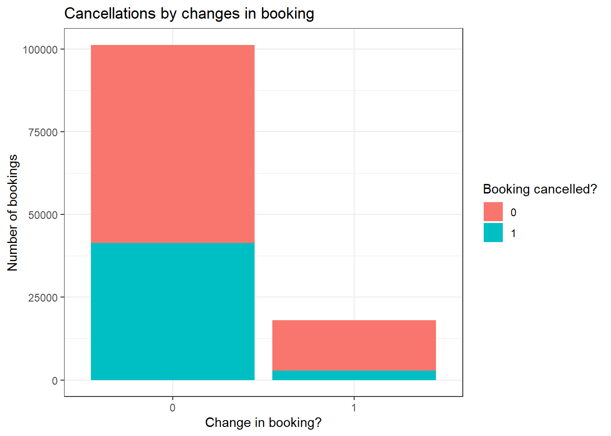

Code
library(tidyverse)
knitr::opts_chunk$set(echo = TRUE, warning=FALSE, message=FALSE)Nick Boonstra
August 16, 2022
For today’s challenge, I will be reading in and wrangling data from the “hotel_bookings” dataset.
First, my R setup chunk:
Reading in the data was a fairly straightforward process:
# A tibble: 119,390 × 32
hotel is_ca…¹ lead_…² arriv…³ arriv…⁴ arriv…⁵ arriv…⁶ stays…⁷ stays…⁸ adults
<chr> <dbl> <dbl> <dbl> <chr> <dbl> <dbl> <dbl> <dbl> <dbl>
1 Resor… 0 342 2015 July 27 1 0 0 2
2 Resor… 0 737 2015 July 27 1 0 0 2
3 Resor… 0 7 2015 July 27 1 0 1 1
4 Resor… 0 13 2015 July 27 1 0 1 1
5 Resor… 0 14 2015 July 27 1 0 2 2
6 Resor… 0 14 2015 July 27 1 0 2 2
7 Resor… 0 0 2015 July 27 1 0 2 2
8 Resor… 0 9 2015 July 27 1 0 2 2
9 Resor… 1 85 2015 July 27 1 0 3 2
10 Resor… 1 75 2015 July 27 1 0 3 2
# … with 119,380 more rows, 22 more variables: children <dbl>, babies <dbl>,
# meal <chr>, country <chr>, market_segment <chr>,
# distribution_channel <chr>, is_repeated_guest <dbl>,
# previous_cancellations <dbl>, previous_bookings_not_canceled <dbl>,
# reserved_room_type <chr>, assigned_room_type <chr>, booking_changes <dbl>,
# deposit_type <chr>, agent <chr>, company <chr>, days_in_waiting_list <dbl>,
# customer_type <chr>, adr <dbl>, required_car_parking_spaces <dbl>, …
# ℹ Use `print(n = ...)` to see more rows, and `colnames()` to see all variable namesAfter reading in the data, I made a few transformations:
hotels<-hotels %>%
rename(is_cancelled = is_canceled) %>% ## i'm petty
mutate(booking_dummy = case_when( ## dummy var for whether or not changes were made
booking_changes == 0 ~ 0,
T ~ 1
)) %>%
mutate(arrival_date_month_num = case_when( ## numerical variable for months
arrival_date_month == "January" ~ 1,
arrival_date_month == "February" ~ 2,
arrival_date_month == "March" ~ 3,
arrival_date_month == "April" ~ 4,
arrival_date_month == "May" ~ 5,
arrival_date_month == "June" ~ 6,
arrival_date_month == "July" ~ 7,
arrival_date_month == "August" ~ 8,
arrival_date_month == "September" ~ 9,
arrival_date_month == "October" ~ 10,
arrival_date_month == "November" ~ 11,
arrival_date_month == "December" ~ 12
))I found that this data set only required fairly minimal/minor transformations. Firstly, I renamed the “is_canceled” variable to “is_cancelled” primarily because I’m petty, and I knew I would want to spell it with the double “L” the whole time. Next, I created a dummy variable called “booking_dummy” for whether or not any changes were made to a booking, regardless of how many such changes there were. Lastly, I created a variable named “arrival_date_month_num” to assign the corresponding number to each month as named in the “arrival_date_month” column.
Before I started summarising, I wanted to get a sense of what the data “looked like,” so to speak:
[1] "hotel" "is_cancelled"
[3] "lead_time" "arrival_date_year"
[5] "arrival_date_month" "arrival_date_week_number"
[7] "arrival_date_day_of_month" "stays_in_weekend_nights"
[9] "stays_in_week_nights" "adults"
[11] "children" "babies"
[13] "meal" "country"
[15] "market_segment" "distribution_channel"
[17] "is_repeated_guest" "previous_cancellations"
[19] "previous_bookings_not_canceled" "reserved_room_type"
[21] "assigned_room_type" "booking_changes"
[23] "deposit_type" "agent"
[25] "company" "days_in_waiting_list"
[27] "customer_type" "adr"
[29] "required_car_parking_spaces" "total_of_special_requests"
[31] "reservation_status" "reservation_status_date"
[33] "booking_dummy" "arrival_date_month_num" # A tibble: 1 × 1
n
<int>
1 119390# A tibble: 2 × 2
hotel n
<chr> <int>
1 City Hotel 79330
2 Resort Hotel 40060# A tibble: 178 × 2
country n
<chr> <int>
1 ABW 2
2 AGO 362
3 AIA 1
4 ALB 12
5 AND 7
6 ARE 51
7 ARG 214
8 ARM 8
9 ASM 1
10 ATA 2
# … with 168 more rows
# ℹ Use `print(n = ...)` to see more rows arrival_date_month_num
arrival_date_year 1 2 3 4 5 6 7 8 9 10 11 12
2015 0 0 0 0 0 0 2776 3889 5114 4957 2340 2920
2016 2248 3891 4824 5428 5478 5292 4572 5063 5394 6203 4454 3860
2017 3681 4177 4970 5661 6313 5647 5313 4925 0 0 0 0This data set appears to describe hotel bookings from across a number of different countries and kinds of hotels, in the time range between July 2015 and August 2018. Each observation appears to be a single booking, with a range of information about each booking tracked in each column.
As I looked through the data, I found myself gravitating toward the information about booking changes and cancellations.
# A tibble: 2 × 2
is_cancelled `mean(booking_changes, na.rm = T)`
<dbl> <dbl>
1 0 0.293
2 1 0.0983# A tibble: 2 × 2
is_cancelled `median(booking_changes)`
<dbl> <dbl>
1 0 0
2 1 0Clearly, most bookings did not have any changes to their booking, demonstrated by the fact that the median number of changes for both cancelled and non-cancelled bookings was 0. However, it is interesting to observe that non-cancelled bookings tended to have more booking changes performed, suggesting that making changes to a booking may have increased the likelihood of that booking not having to be cancelled – a boon for hotels and travel agencies, if that extra bit of work is all it takes to retain a customer.
These observations can be seen much more clearly in a graphic visualization:

This bar graph utilizes the “booking_dummy” variable, easily dividing all bookings into those that had changes performed and those that didn’t. As can be seen, there were more bookings cancelled without changes being made than there were total bookings with changes! Additionally, a much smaller proportion of bookings with changes ended up being cancelled when compared to bookings without any changes made (though cancellations accounted for less than half of each group in the end). Of course, it is hard to make broad generalizations without knowing more of the story told by this data. However, on the face of things it looks as though a case could be made for flexibility with regards to changing bookings as a strong protection against customers cancelling reservations.
---
title: "Nick Boonstra Challenge 2"
author: "Nick Boonstra"
desription: "Data wrangling: using group() and summarise()"
date: "08/16/2022"
format:
html:
toc: true
code-fold: true
code-copy: true
code-tools: true
categories:
- challenge_2
- boonstra
- week_1
- hotels
---
## Introduction
For today's challenge, I will be reading in and wrangling data from the "hotel_bookings" dataset.
#### Setup Chunk
First, my R setup chunk:
```{r}
#| label: setup
#| warning: false
#| message: false
library(tidyverse)
knitr::opts_chunk$set(echo = TRUE, warning=FALSE, message=FALSE)
```
## Reading in the data
Reading in the data was a fairly straightforward process:
```{r}
#| label: read in
hotels<-read_csv("_data/hotel_bookings.csv")
hotels
```
#### Transformations
After reading in the data, I made a few transformations:
```{r}
#| label: transformations
hotels<-hotels %>%
rename(is_cancelled = is_canceled) %>% ## i'm petty
mutate(booking_dummy = case_when( ## dummy var for whether or not changes were made
booking_changes == 0 ~ 0,
T ~ 1
)) %>%
mutate(arrival_date_month_num = case_when( ## numerical variable for months
arrival_date_month == "January" ~ 1,
arrival_date_month == "February" ~ 2,
arrival_date_month == "March" ~ 3,
arrival_date_month == "April" ~ 4,
arrival_date_month == "May" ~ 5,
arrival_date_month == "June" ~ 6,
arrival_date_month == "July" ~ 7,
arrival_date_month == "August" ~ 8,
arrival_date_month == "September" ~ 9,
arrival_date_month == "October" ~ 10,
arrival_date_month == "November" ~ 11,
arrival_date_month == "December" ~ 12
))
```
I found that this data set only required fairly minimal/minor transformations. Firstly, I renamed the "is_canceled" variable to "is_cancelled" primarily because I'm petty, and I knew I would want to spell it with the double "L" the whole time. Next, I created a dummy variable called "booking_dummy" for whether or not any changes were made to a booking, regardless of how many such changes there were. Lastly, I created a variable named "arrival_date_month_num" to assign the corresponding number to each month as named in the "arrival_date_month" column.
## Describing the data
Before I started summarising, I wanted to get a sense of what the data "looked like," so to speak:
```{r}
#| label: summary
names(hotels)
count(hotels)
count(hotels,hotel)
count(hotels,country)
arrivals<-xtabs(~arrival_date_year+arrival_date_month_num,hotels)
arrivals
```
This data set appears to describe hotel bookings from across a number of different countries and kinds of hotels, in the time range between July 2015 and August 2018. Each observation appears to be a single booking, with a range of information about each booking tracked in each column.
## Provide Grouped Summary Statistics
As I looked through the data, I found myself gravitating toward the information about booking changes and cancellations.
```{r}
#| label: exploratory
hotels %>%
group_by(is_cancelled) %>%
summarise(mean(booking_changes,na.rm=T))
hotels %>%
group_by(is_cancelled) %>%
summarise(median(booking_changes))
```
Clearly, most bookings did not have any changes to their booking, demonstrated by the fact that the median number of changes for both cancelled and non-cancelled bookings was 0. However, it is interesting to observe that non-cancelled bookings tended to have more booking changes performed, suggesting that making changes to a booking may have increased the likelihood of that booking not having to be cancelled -- a boon for hotels and travel agencies, if that extra bit of work is all it takes to retain a customer.
### Visualizing and Interpreting
These observations can be seen much more clearly in a graphic visualization:
```{r}
#| label: cancellations
ggplot(hotels,aes(x=factor(booking_dummy),fill=factor(is_cancelled))) +
geom_bar() +
theme_bw() +
labs(title = "Cancellations by changes in booking", x = "Change in booking?", y= "Number of bookings",
fill = "Booking cancelled?")
```
This bar graph utilizes the "booking_dummy" variable, easily dividing all bookings into those that had changes performed and those that didn't. As can be seen, there were more bookings cancelled without changes being made than there were total bookings with changes! Additionally, a much smaller proportion of bookings with changes ended up being cancelled when compared to bookings without any changes made (though cancellations accounted for less than half of each group in the end). Of course, it is hard to make broad generalizations without knowing more of the story told by this data. However, on the face of things it looks as though a case could be made for flexibility with regards to changing bookings as a strong protection against customers cancelling reservations.